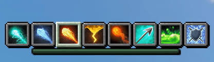
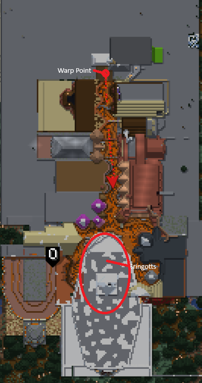

Magic - Wands, Bows, Spells, and More
Overview
This plugin consists of dozens of different spells, several new weapons, and more. I will not be able to cover most of it in this page, but the wiki covers most of the plugin very well.
Wands
When you join the server for the first time, you will be given a wand that is bound to you (it will stay in your inventory even upon death, but can be put in chests). Pressing 'q'(or whatever your drop keybind is) will allow you select spells using your number keys. Unlock more spells by clicking with the wand on an enchantment table, either at spawn or your own.
Other Weapons/Gear
Magic has more tools and weapons to offer besides the wand. Check the wiki to learn how to use these weapons.
To acquire these items, first go to Diagon Alley (check out this page to learn how). After warping, head into the big building, Gringotts, at the end of the street.
(Check out the map on the right to see where Gringotts is).
At Gringotts, you can sell mob drops for emeralds, and emeralds for money. Money can be used to buy each of the special magical pieces of gear.
You can also come here to learn new spells instead of using an enchantment table.
Custom Mobs
Magic also adds in some custom mobs, which can spawn in certain places. (Beware of the mega phantom, it will one tap you, even if you think it won't).